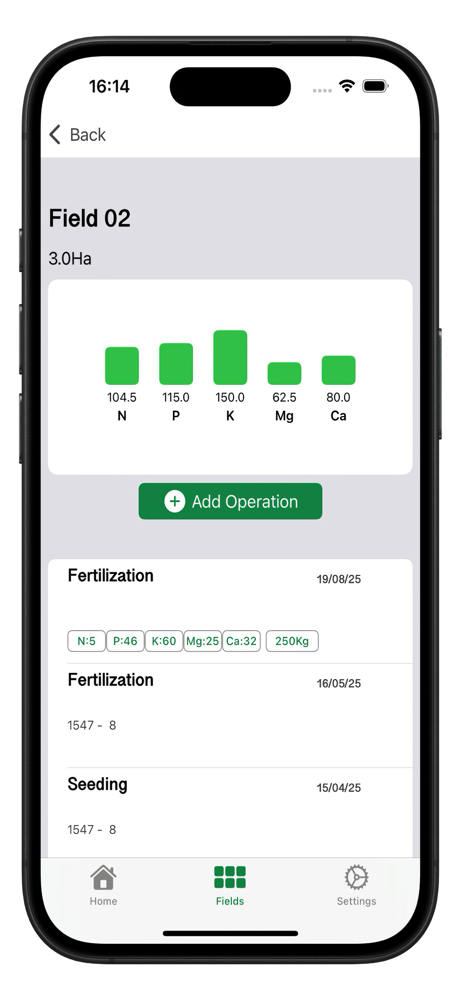
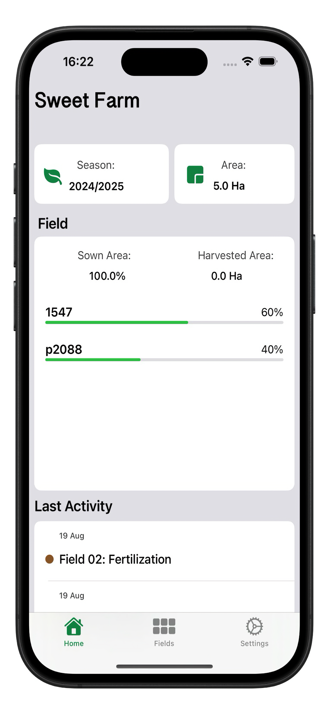
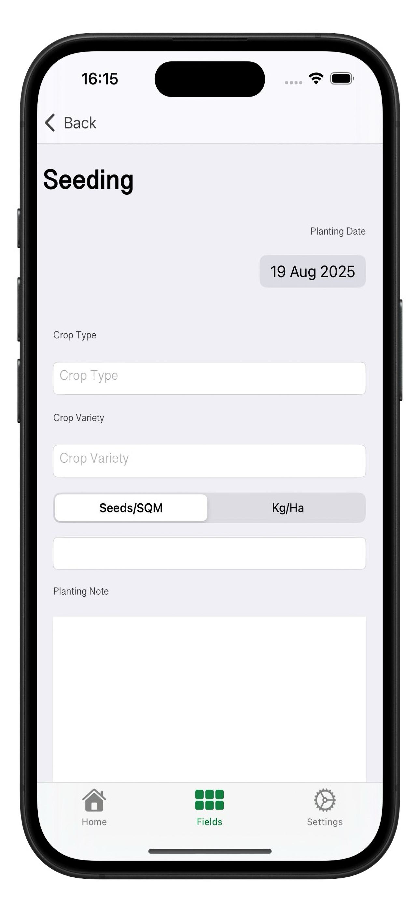

Track crops, manage treatments, and optimize your agricultural workflow.
Track crops, varieties, and planting schedules.
Manage water usage and treatments efficiently.
Monitor nutrients and improve crop health.
Make smarter decisions with your data.


